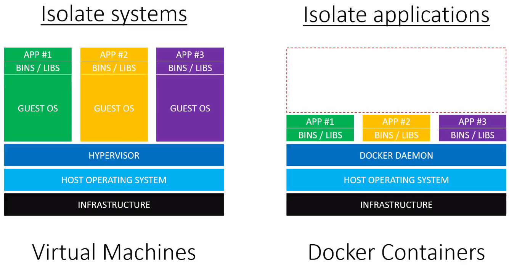

02 - Understanding Docker
Docker vs. VMs
VMs run on a host system
Each VM has its own Guest OS, which are independent from other VMs running on the same host OS
Docker runs on a host system and controls multiple docker images via the docker daemon
Compared to VMs, Docker images are loaded within milliseconds (as compared to minutes for a VM), but all docker images share the same host operating system, they are interacting with
When to use VMs, when docker?
When each application requires different host OSs or different host OSs settings, then VMs are the choice
When multiple application can rely on the same OS and OS settings, then docker is the choice
A VM can have Docker installed, providing a different host OS, that the docker images require
{kind=link}
Docker is suitable for running and testing process or services in isolation (e.g. each component of a web application)
Docker is not limited to web apps (but can be like a package manager for applications, for example applications that were not even designed to work on your OS)
-> Use VMs to run and test entire system -> Use Docker to run and test single applications
Docker applications can be deployed on many cloud server (e.g. AWS, Azure, DigitalOcean)
There, they are running on VMs, that are set up for you
Docker can run on almost any host OS
What does a Docker installation consist of?
Docker daemon
CLI (command line interface)
Docker daemon is a service that runs on the host OS (only runs on Linux as it depends on various Linux kernel features)
Docker daemon exposes a REST API. A number of tools can talk to the daemon through it, most known is the docker CLI
Daemon is like the server and the CLI the client
There are other third party clients able to interact the daemon (for various programming languages)
{kind=link}
The docker client is installed on your local OS (Linux, OSX, Windows)
The docker daemon is installed on the docker host (a Linux machine or VM)
The registry is a part of the docker ecosystem (explained later)